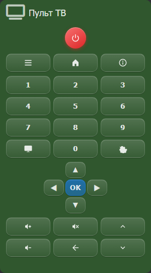

Пульт ТВ

Экранный пульт телевизора.
Все поля
Ниже — полный список полей настройки виджета: каждое поле, его ключ в файле виджета, тип и значение по умолчанию. Ключ нужен, если вы правите код виджета вручную или собираете свой виджет в конструкторе.
Основное params
| Поле | Тип | По умолчанию | Описание |
|---|---|---|---|
Названиеtitle | text | — | Заголовок карточки. Если пусто, виджет подставляет своё название. |
Тип иконкиicon_type | select | icon | Откуда берётся иконка: из набора Font Awesome, из свойства объекта или по ссылке на картинку. От этой настройки зависит, какие из трёх полей ниже показываются. |
Иконкаicon | icon_picker | fas fa-tv | Класс иконки Font Awesome, например fas fa-lightbulb. Показывается: пока Тип иконки = icon. |
Объект (иконка)icon_object | object | — | Объект, свойство которого даёт иконку. Показывается, когда выбран тип «Свойство». Показывается: пока Тип иконки = property. |
Свойство (иконка)icon_property | property | — | Свойство объекта, значение которого используется как иконка. Показывается: пока Тип иконки = property. |
URL иконкиicon_url | text | — | Адрес картинки, которая показывается как иконка: https://… либо путь внутри модуля. Показывается: пока Тип иконки = url. |
Способ отправкиsend_mode | select | property | Что делает виджет при отправке: запись в свойство объекта, вызов команды, управление телевизором по локальной сети или запуск скрипта. |
Объект отправкиobject | object | — | Объект Majordomo, из которого виджет читает значение или в который его записывает. Показывается: пока Способ отправки = property. |
Свойствоproperty | property | value | Свойство объекта, значение которого показывает виджет. Список свойств появляется после выбора объекта; пока объект не выбран, поле остаётся пустым и показывает «по умолчанию». Показывается: пока Способ отправки = property. |
Префикс командыcommand_prefix | text | — | Текст, который подставляется перед кодом нажатой клавиши, образуя системную команду сервера. Префикс irsend SEND_ONCE TV и код Power дадут команду irsend SEND_ONCE TV Power. Показывается: пока Способ отправки = command. |
IP телевизораtv_ip | text | — | IP-адрес телевизора в локальной сети. Показывается: пока Способ отправки = tv. |
Порт телевизораtv_port | text | — | Порт телевизора для управления. Порт не указан — используется значение по умолчанию производителя. Показывается: пока Способ отправки = tv. |
Имя сценарияscript | text | — | Имя сценария, который запускает виджет. Показывается: пока Способ отправки = script. |
Действие при включенииtv_on_type | select | — | Что делать по нажатию кнопки «включить», когда телевизор выключен и недоступен по сети: запись в свойство, вызов метода или запуск сценария. Пусто — кнопка «включить» работает как остальные, отправляя команду по сети. Показывается: пока Способ отправки = tv. |
Объектtv_on_method_obj | method_object | — | Объект, метод которого вызывается при включении. Показывается: пока Способ отправки = tv и Действие при включении = method. |
Объектobject_tv_on | object | — | Объект, в свойство которого пишется команда при включении. Показывается: пока Способ отправки = tv и Действие при включении = property. |
Свойствоproperty_tv_on | property | — | Свойство, в которое пишется код команды при включении. Показывается: пока Способ отправки = tv и Действие при включении = property. |
Методtv_on_method | method | — | Метод, который вызывается при включении. Показывается: пока Способ отправки = tv и Действие при включении = method. |
Имя сценарияtv_on_script | script | — | Сценарий, который запускается при включении. Показывается: пока Способ отправки = tv и Действие при включении = script. |
Параметрtv_on_param | text | — | Значение, передаваемое сценарию как value. Код команды передаётся отдельно как key. Показывается: пока Способ отправки = tv и Действие при включении = script. |
Коды кнопок (JSON)codes | textarea | — | JSON-объект, который сопоставляет клавишу пульта с командой MajorDomo: {"power": "Power", "vol+": "VolumeUp"}. Клавиша — из первого столбца таблицы ниже. Если клавиши в объекте нет или значение пустое, отправляется команда по умолчанию. Если JSON написан с ошибкой, виджет не ломается — используются команды по умолчанию. |
Дополнительно advanced
| Поле | Тип | По умолчанию | Описание |
|---|---|---|---|
Фон виджетаbg_mode | select | — | Откуда берётся фон карточки: тема виджета, картинка, свой цвет или цвет из свойства объекта. |
Цветcolor | color | — | Цвет фона карточки. Применяется, когда выбран режим «Свой цвет». Показывается: пока Фон виджета = color. |
URL изображенияbg_image | text | — | Адрес фоновой картинки. Показывается, когда выбран режим «Картинка». Показывается: пока Фон виджета = image. |
Объект (цвет)bg_object | object | — | Объект, свойство которого задаёт цвет фона. Показывается, когда выбран режим «Цвет из свойства». Показывается: пока Фон виджета = property. |
Свойство (цвет)bg_property | property | — | Свойство объекта, значение которого используется как цвет фона. Показывается: пока Фон виджета = property. |
Признак доступностиobject_alive | object | — | Объект, по которому проверяется «живость» виджета: если он не отвечает, карточка гаснет и перестаёт откликаться. |
Свойство (доступность)property_alive | property | — | Свойство объекта «живости», по которому виджет понимает, что связь жива. |
Таймаут (сек)alive_timeout | number | — | Сколько секунд ждать ответа, прежде чем считать объект недоступным. По умолчанию 3. |
Когда Способ отправки = ТВ по IP и задано Действие при включении, кнопка «включить» выполняет это действие (свойство, метод или сценарий) вместо команды по сети. Это нужно, если телевизор выключен и недоступен по IP — включить его можно, например, ИК-командой.
Действие при включении выбирается из трёх вариантов: Свойство — код команды записывается в свойство объекта; Метод — вызывается метод объекта; Сценарий — запускается сценарий (код команды приходит как key, а значение поля Параметр — как value). Если поле пусто, кнопка «включить» работает как остальные и просто шлёт команду по сети.
Способы отправки
Поле Способ отправки определяет, что виджет делает при нажатии клавиши. Доступны четыре режима:
| Режим | Что делает |
|---|---|
Свойствоproperty | Записывает код клавиши в свойство выбранного объекта Majordomo (setProperty). |
Командаcommand | Выполняет на сервере системную команду, собранную из префикса и кода клавиши — см. ниже. |
ТВ по IPtv | Отправляет клавишу прямо на телевизор по локальной сети (tvKey); при выключенном телевизоре срабатывает Действие при включении. |
Сценарийscript | Запускает сценарий Majordomo, передавая код клавиши как key. |
Способ отправки «Команда»
В режиме Команда нажатие клавиши заставляет сервер выполнить системную (shell) команду. Она собирается из значения поля Префикс команды и кода нажатой клавиши:
Префикс команды + код клавиши
Пример: префикс irsend SEND_ONCE TV и клавиша с кодом Power → сервер выполнит irsend SEND_ONCE TV Power (запуск ИК-передатчика).
Код клавиши берётся из поля Коды кнопок (JSON), а если клавиши там нет — из встроенного набора команд по умолчанию (см. таблицу ниже): например power → Power, ok → Confirm, vol+ → VolumeUp, цифры → Digit0…Digit9.
Команда выполняется на сервере от имени веб-сервера и не проходит проверок — в префиксе указывайте только доверенные команды.
Клавиши пульта
Каждая кнопка отправляет одну команду. По умолчанию виджет отправляет команды из столбца «Команда по умолчанию». Чтобы отправить свою команду, укажите её в поле codes в формате JSON, где ключ — клавиша из первого столбца, а значение — команда: {"power": "TV_PWR", "vol+": "VOL_UP"}. Клавиши, перечисленные в поле codes, отправляют указанную команду; остальные — команду по умолчанию.
| Клавиша | Команда по умолчанию | Кнопка |
|---|---|---|
power | Power | Питание |
menu | Menu | Меню |
home | Home | Домой |
info | Info | Инфо |
1 | Digit1 | Цифра 1 |
2 | Digit2 | Цифра 2 |
3 | Digit3 | Цифра 3 |
4 | Digit4 | Цифра 4 |
5 | Digit5 | Цифра 5 |
6 | Digit6 | Цифра 6 |
7 | Digit7 | Цифра 7 |
8 | Digit8 | Цифра 8 |
9 | Digit9 | Цифра 9 |
input | Source | Вход — выбор источника сигнала |
0 | Digit0 | Цифра 0 |
settings | Settings | Настройки |
back | Back | Назад — выход из меню |
up | CursorUp | Стрелка вверх |
down | CursorDown | Стрелка вниз |
left | CursorLeft | Стрелка влево |
right | CursorRight | Стрелка вправо |
ok | Confirm | OK — подтверждение |
mute | Mute | Без звука |
vol+ | VolumeUp | Громче |
vol- | VolumeDown | Тихе |
ch+ | ChannelStepUp | Канал + |
ch- | ChannelStepDown | Канал − |
Кнопки-стрелки и цифры выводятся цифрами и символами, а не подписями; их назначение видно по наведению и клавишам в таблице.